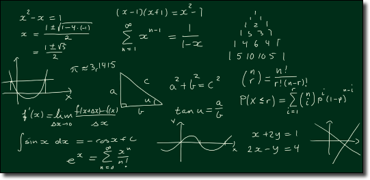

Introduksjon til likninger
Contents
Introduksjon til likninger¶
Nå ønsker vi at du skal få en god forståelse hva en likning er, og hva det betyr at for eksempel \(x=4\) er en løsning av en likning.
Du skal også lære å løse en del likninger ved ulike metoder. Du skal i første omgang konsentrere deg om lineære likninger. Det er likninger av typen
I løpet av 1T skal du kunne løse disse ved
prøve-og-feile-metoden
generell metode
grafisk løsning
løsning ved hjelp av digitale verktøy
Prøve-og-feile-metoden og generell metode skal du jobbe med i denne leksjonen. Grafisk løsning skal du se på når du kommer til Funksjoner og løsning ved hjelp av digitale verktøy kommer neste gang.
Det kan godt være at du kan mye av det du møter i denne leksjonen fra før. Likevel vil vi at du jobber deg gjennom leksjonen slik at du om mulig får en enda dypere forståelse av dette temaet.

Hva er en likning?¶
I videoen nedenfor vil du lære hva en likning er og hva det vil si at en bestemt x-verdi er en løsning til en likning.
I videoen ovenfor så du at i en likning er det to uttrykk som skal være like. Som oftest er høyre- og venstresiden to uttrykk i x. Når du skal løse likninger, søker du de x-ene som gjør at venstresiden og høyresiden av likhetstegnet blir like.
I videoen så du på likningen
Denne likningen har to løsninger: \( x= 2\) og \(x=-3\).
Man ser for eksempel at \(x=-3\) er en løsning fordi
Venstresiden\(= 2\cdot (-3)^2+(-3)=2\cdot 9-3=15\)
Høyresiden \( =12-(-3)=15 \)
Siden venstresiden og høyresiden er like når \(x=-3\), så betyr det at \(x=-3\) er en løsning til likningen
Kan du vise at også \(x=2\) er en løsning?
Prøve-og-feile-metoden¶
Denne metoden går ut på å prøve med ulike verdier for den ukjente og se om du kan finne en løsning som passer.
Eksempel
Finn en \(x\) som gjør følgende likning sann:
Når du skal bruke prøve-og-feile-metoden, setter du inn ulike verdier for \(x\) på høyre- og venstresiden av likningen og ser hvilken som gjør de to sidene like store.
\( x=1\) gir V.S. \(=2\cdot 1-2=0\) og H.S. \(= 10-4\cdot 1=6\) \(\to\) V.S. ≠ H.S \(\to x≠1\)
\(x=2\) gir V.S. \(=2\cdot 2-2=2\) og H.S. \(=10-4\cdot 2=2\) \(\to\) V.S = H.S \(\to x=2\)
Over ser du at \( x=1\) ikke er en løsning, mens \(x=2\) er en løsning.
Vi skriver H.S. for høyre side og V.S. for venstre side av en likning.
Oppgave 1
Hvilke av likningenene under har \(x=3\) som en løsning?
a) \(2x−1=5\)
b) \(4x-8=10-6x\)
c) \(4x+0=24-x≠1\)
d) \(4+x = 4-x\)
e) \(4+3x=2x-4\)
Klikk på knappen til høyre fasit!
Riktige svar er a) og c).
Polynomlikninger¶
Det fins flere typer likninger som du skal lære å løse. De enkleste er de som vi kaller for lineære. En lineære likning er en likning der høyeste potens av \(x\) er 1. Her er et eksempel:
Selv om det står \(4^2\) på høyresiden av denne likningen, så er dette likevel en lineær likning. Det er fordi hvert ledd som inneholder \(x\) kun er i førstepotens.
På samme måte er en andregradslikning en likning som er satt sammen av ulike ledd på hver side av likhetstegnet der høyeste potens av \(x\) er \(x^2\). Her er et eksempel på en slik likning:
På samme måte finnes tredjegradslikninger, fjerdegradslikninger etc. Likningen nedenfor er en femtegradslikning.
Den siste likningen skal du slippe å løse med «papir og blyant».
Oppgave 2
Se om du kan lagetre likninger som har \(x=4\) som en løsning.
Andre ukjente¶
Det er vanlig å bruke \(x\) for den ukjent i en likning. Men det er ingen grunn til at du ikke skal kunne bruke andre bokstaver. Dette vil du komme tilbake til når du skal jobbe med formelregning. Her er et vanlig eksempel:
Hvilken verdi for \(t\) vil passe inn i denne likningen?